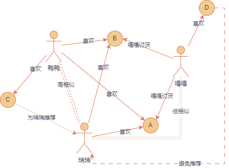
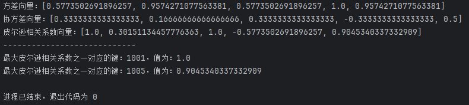

# 基于用户的协同过滤算法
本篇文档将会用通俗易懂的方式带你来了解并实现基于用户的协同过滤算法，不再基于特定开源库，使用原生代码完成协同过滤的构建，实际上，基于用户的协同过滤很简单，只需要弄懂那几个公式是怎么用的就好了，真正的难点是公式的提出与证明，不过呢今天我不想讲相关的证明了。
本篇文章主要是带你打开协同过滤的大门，我只是想告诉你，作为人的你我具有不断认识的能力，且在认识中不断消除谬误，并无限趋近于真理，我们有能力也必将认识这个世界，而协同过滤正是其中之一，究其本质并不复杂。
那么请坐好，协同过滤的列车要发车啦！
# 算法介绍
基于用户的协同过滤，实际上就是找与目标用户最为相似的一个或多个用户，这里的目标用户实际上就是我们要为其进行信息推送的用户。假如瑞瑞喜欢 A 和 B，鸭鸭喜欢 A、B 和 C，他们都对喜欢的商品给予较高的评价，嘎嘎非常讨厌 A 和 B，但是钟爱 D。
那么我们可以看到似乎鸭鸭的 A 和 B 与瑞瑞的 A 和 B 是一样的，但是鸭鸭买过 C 而瑞瑞没有买过 C，瑞瑞和鸭鸭是高度相似的，那么我们就可以给瑞瑞推荐鸭鸭喜欢的 C，或许瑞瑞也喜欢呢！
而对于嘎嘎来说瑞瑞喜欢的 A 和 B 正是嘎嘎他所讨厌的，而嘎嘎对 D 情有独钟，我们可以了解到，瑞瑞或许是讨厌嘎嘎所喜欢的，那么嘎嘎和瑞瑞是低相似的，嘎嘎喜欢的 D 也许不应该给瑞瑞推荐！

# 计算用户间的相似度
# Jaccard 相似系数
Jaccard 相似系数主要是衡量两个集合的相似度 J (A,B) 是它的数学表达
Jaccard 相似系数特别适用于处理二值数据（即只有两个值：0 或 1）。例如，在文本处理中，可以通过是否包含某个词来表示文档中的词汇出现与否，这种情况下 Jaccard 相似系数非常有效。然而 Jaccard 相似度不考虑元素的权重或频率。如果两个集合中有的元素出现频率较高，而有的频率较低，Jaccard 相似度会将这些元素视为等价，不适用于需要考虑元素重要性的场景。
# 余弦相似度
余弦相似度是 n 维空间中两个 n 维向量之间角度的余弦。它等于两个向量的点积（向量积）除以两个向量长度（或大小）的乘积。
是有取值范围的，在 之间，1 是完全相似，-1 是完全不相似，余弦相似度的计算公式简单，通常只涉及向量的点积和模长的运算，因此在实际应用中计算速度较快。
# 皮尔逊相关系数
皮尔逊相关系数，也称为皮尔逊积矩相关系数，是衡量两个变量之间线性关系的强度和方向的统计量。其值范围从 - 1 到 + 1，广泛应用于统计学、数据分析、机器学习等领域，特别是在衡量变量之间的相关性时。
标准差：
是数据总量， 是平均值。
协方差：
皮尔逊相关系数
是 X 的标准差。同样他是有取值范围的，在 之间，1 是完全相似，-1 是完全不相似
皮尔逊相关系数的计算公式相对简单，容易理解，且其值的意义非常直观，可以清楚地表示变量之间的线性关系强度和方向。 它不仅衡量了两个变量之间的协方差，还考虑了变量的标准差，因此能够归一化协方差，使得相关系数的值独立于变量的尺度。
# 应用示例
| 用户 - 商品评分表 | 用户 1001 | 用户 1002 | 用户 1003 | 用户 1004 | 用户 1005 |
|---|---|---|---|---|---|
| 商品 1 | 5 | 4 | 5 | 4 | 5 |
| 商品 2 | 4 | 3 | 4 | 4 | 4 |
| 商品 3 | 5 | 2 | 5 | 3 | 5 |
| 商品 4 | 4 | 2 | 4 | 4 | 3 |
这个时候我们要找与用户 1003 最相似的用户，可见 1003 给出了（5，4，5，4）的评分向量，这与用户 1001 的（5，4，5，4）评分向量完全一致，用户 1003 与用户 1001 高度相似，我们还可以看到用户 1005 给出了（5，4，5，3）的评分向量，这也与用户 1003 高度相似。
这些都是显然的，但是计算机怎么能知道呢？本篇文章采用皮尔逊相关系数完成协同过滤。
# 计算标准差
double standardDeviationCalculations(int[] ratings) { | |
double std = 0; // 标准差 | |
double avarage = 0; // 平均值 | |
int sum = 0; // 评分和 | |
double varianceUP = 0; // 方差分子 | |
double variance = 0; // 方差 | |
for (int i = 0; i < ratings.length; i++) { | |
sum += ratings[i]; | |
} | |
avarage = (double) sum / ratings.length; | |
for (int i = 0; i < 4; i++) { // 方差分子 | |
varianceUP += Math.pow(ratings[i] - avarage, 2); | |
} | |
variance = varianceUP / (ratings.length - 1); | |
std = Math.sqrt(variance); | |
return std; | |
} |
# 计算协方差
double covarianceCalculation(int[] X, int[] Y) { | |
double covariance = 0; // 协方差 | |
double avarageX = 0; // 平均值 X | |
double avarageY = 0; // 平均值 Y | |
for (int i = 0; i < X.length; i++) { | |
avarageX += X[i]; | |
} | |
avarageX = avarageX / X.length; | |
for (int i = 0; i < Y.length; i++) { | |
avarageY += Y[i]; | |
} | |
avarageY = avarageY / Y.length; | |
for (int i = 0; i < X.length; i++) { | |
covariance += (X[i] - avarageX) * (Y[i] - avarageY); | |
} | |
covariance = covariance / (X.length - 1); | |
return covariance; | |
} |
# 计算皮尔逊相关系数
double pearsonCorrelationCoefficient(double covarianceXY, double stdX, double stdY) { | |
return covarianceXY / (stdX * stdY); | |
} |
# 调用
public class SuiBianTest { | |
double standardDeviationCalculations(int[] ratings) { | |
double std = 0; // 标准差 | |
double avarage = 0; // 平均值 | |
int sum = 0; // 评分和 | |
double varianceUP = 0; // 方差分子 | |
double variance = 0; // 方差 | |
for (int i = 0; i < ratings.length; i++) { | |
sum += ratings[i]; | |
} | |
avarage = (double) sum / ratings.length; | |
for (int i = 0; i < 4; i++) { // 方差分子 | |
varianceUP += Math.pow(ratings[i] - avarage, 2); | |
} | |
variance = varianceUP / (ratings.length - 1); | |
std = Math.sqrt(variance); | |
return std; | |
} | |
double covarianceCalculation(int[] X, int[] Y) { | |
double covariance = 0; // 协方差 | |
double avarageX = 0; // 平均值 X | |
double avarageY = 0; // 平均值 Y | |
for (int i = 0; i < X.length; i++) { | |
avarageX += X[i]; | |
} | |
avarageX = avarageX / X.length; | |
for (int i = 0; i < Y.length; i++) { | |
avarageY += Y[i]; | |
} | |
avarageY = avarageY / Y.length; | |
for (int i = 0; i < X.length; i++) { | |
covariance += (X[i] - avarageX) * (Y[i] - avarageY); | |
} | |
covariance = covariance / (X.length - 1); | |
return covariance; | |
} | |
double pearsonCorrelationCoefficient(double covarianceXY, double stdX, double stdY) { | |
return covarianceXY / (stdX * stdY); | |
} | |
@Test | |
public void testCollaborativeFiltering() { | |
int[][] ratings_1_5 = { | |
{5, 4, 5, 4}, //1001 对商品 1、2、3、4 的评分 | |
{4, 3, 2, 2}, //1002 对商品 1、2、3、4 的评分 | |
{5, 4, 5, 4}, //1003 对商品 1、2、3、4 的评分 | |
{4, 4, 2, 4}, //1004 对商品 1、2、3、4 的评分 | |
{5, 4, 5, 3}, //1005 对商品 1、2、3、4 的评分 | |
}; | |
//--------------------- 计算方差 ----------------- | |
ArrayList<Double> stdVector = new ArrayList<>(); // 方差向量 | |
for (int i = 0; i < ratings_1_5.length; i++) { | |
stdVector.add(standardDeviationCalculations(ratings_1_5[i])); | |
} | |
System.out.println("方差向量：" + stdVector); | |
//---------------- 协方差计算 cov (X,Y)------------ | |
ArrayList<Double> covarianceVector = new ArrayList<>(); // 协方差向量 | |
for (int i = 0; i < ratings_1_5.length; i++) { | |
covarianceVector.add(covarianceCalculation(ratings_1_5[2], ratings_1_5[i])); | |
} | |
System.out.println("协方差向量：" + covarianceVector); | |
//-------------- 皮尔逊相关系数 ---------------- | |
ArrayList<Double> pearsonVector = new ArrayList<>(); // 皮尔逊相关系数向量 | |
for (int i = 0; i < ratings_1_5.length; i++) { | |
pearsonVector.add(pearsonCorrelationCoefficient(covarianceVector.get(i), stdVector.get(2), stdVector.get(i))); | |
} | |
System.out.println("皮尔逊相关系数向量：" + pearsonVector); | |
System.out.println("----------------------------"); | |
HashMap<String, Double> map = new HashMap<>(); | |
map.put("1001", pearsonVector.get(0)); | |
map.put("1002", pearsonVector.get(1)); | |
// map.put("1003", pearsonVector.get(2)); | |
map.put("1004", pearsonVector.get(3)); | |
map.put("1005", pearsonVector.get(4)); | |
// 使用 Stream API 获取最大的两个值及它们对应的键 | |
List<Map.Entry<String, Double>> topTwoEntries = map.entrySet() | |
.stream() | |
.sorted(Map.Entry.<String, Double>comparingByValue().reversed()) // 按照 value 降序排序 | |
.limit(2) // 只取前两项 | |
.toList(); | |
// 输出结果 | |
topTwoEntries.forEach(entry -> | |
System.out.println("最大皮尔逊相关系数之一对应的键：" + entry.getKey() + "，值为：" + entry.getValue()) | |
); | |
if (topTwoEntries.size() < 2) { | |
System.out.println("注意：Map中的元素不足两个"); | |
} | |
} | |
} |
# 输出

# 后续
此时我们已经找到了，与用户 1003 最为相似的两个用户，分别是用户 1001——1.000 和用户 1005——0.905，这与我们之前的” 显然猜想 “相一致。
然后我们就可以根据用户 1001 和用户 1005 已经购买的商品但用户 1003 没有购买的商品，将他们两个加权综合计算，为用户 1003 推荐。
# 小结
其实，利用皮尔逊相关系数计算用户之间的相关性并不复杂，而在计算之前，我们应该怎么设计根据用户 1003 的已购买商品的评分信息，抽取与他购买的相同商品的其他用户的商品评分信息的 SQL 或者是其他信息提取方法，我想，这才是更为重要的点。
这可能就是简单的 “数据清洗” 吧！哈哈哈哈哈哈哈。